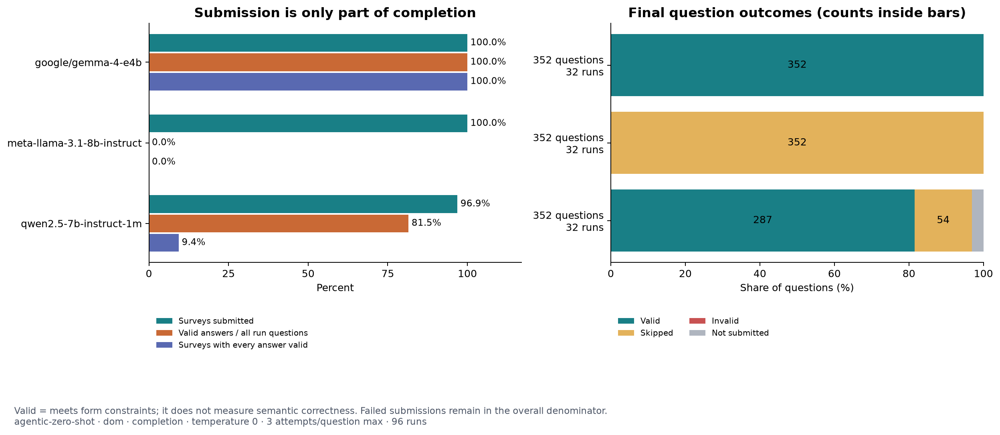
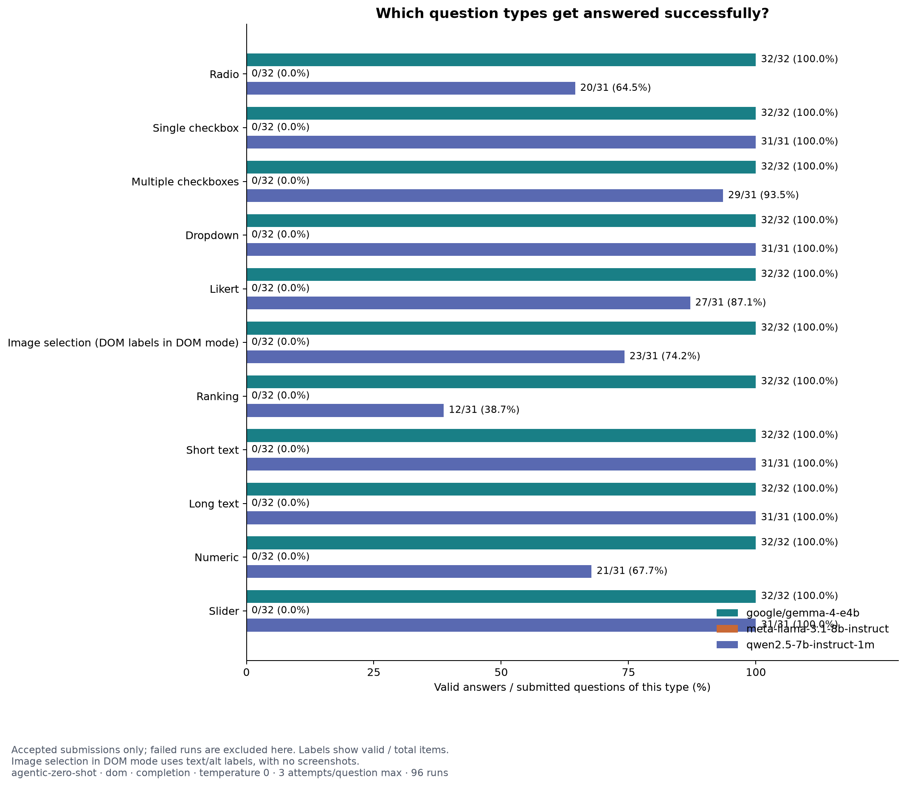
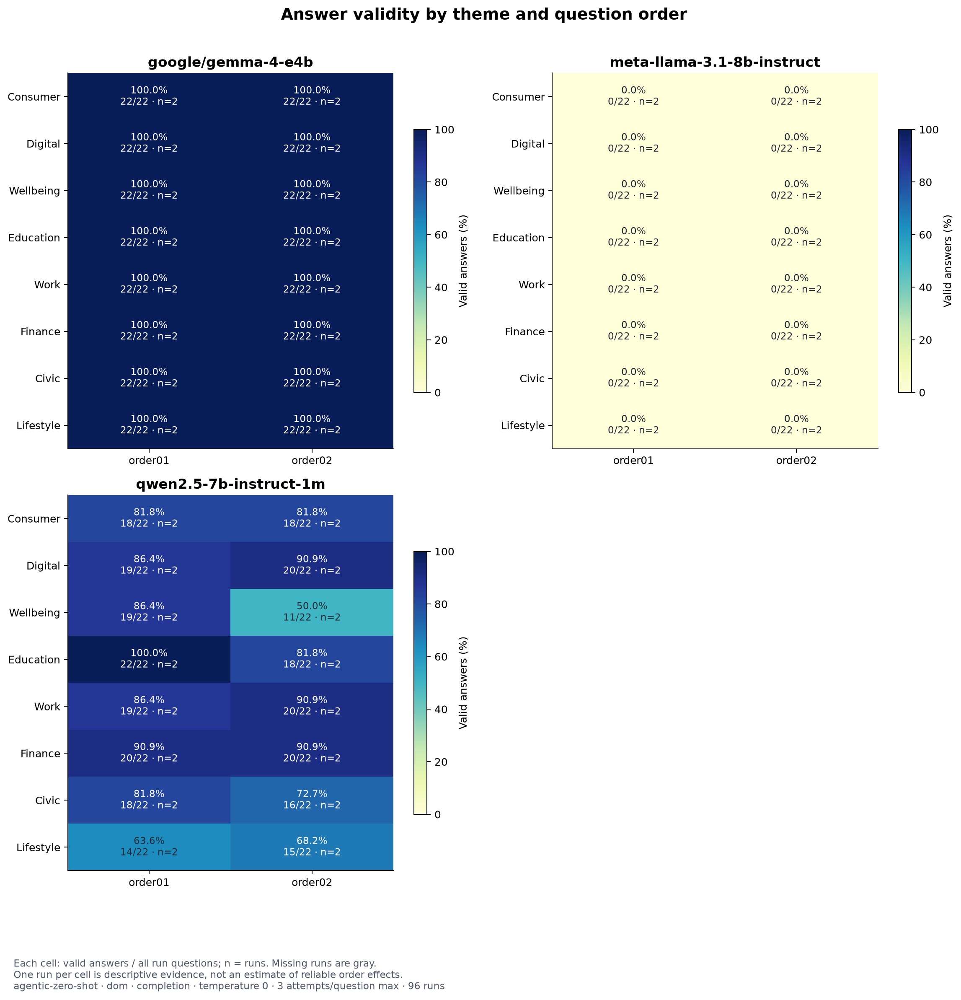
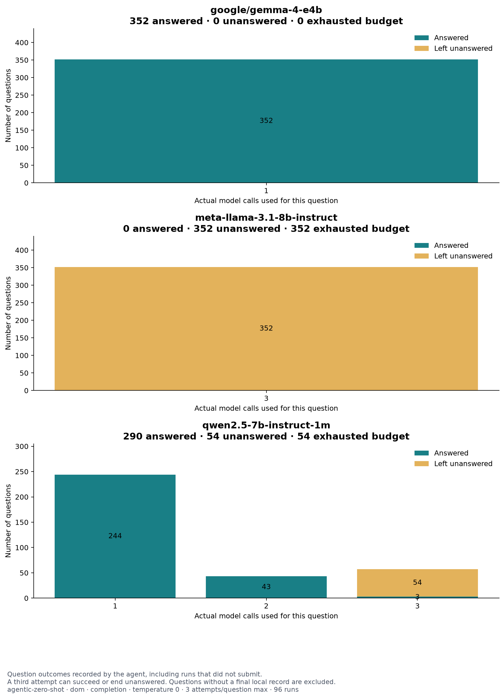
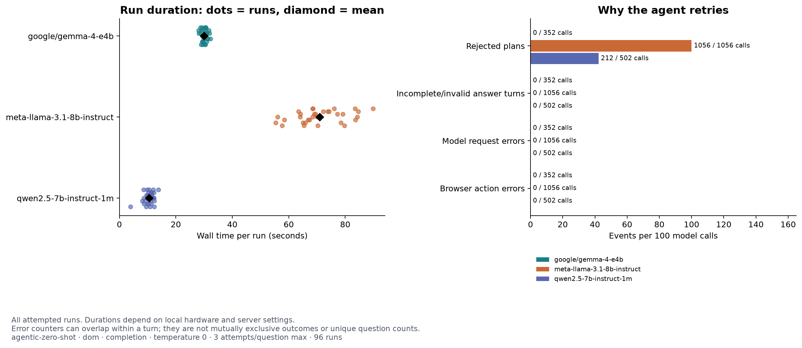

Survey agent results
96 runs · 3 model(s) · 1056 questions across attempted runs
No attention checks were included; attention scores are not applicable.
Model summary
| Model | Runs | Submitted | Valid answers | All questions | Valid (%) | Fully valid surveys | Model calls | Mean seconds/run |
|---|---|---|---|---|---|---|---|---|
| google/gemma-4-e4b | 32 | 32 | 352 | 352 | 100.0 | 32 | 352 | 30.0 |
| meta-llama-3.1-8b-instruct | 32 | 32 | 0 | 352 | 0.0 | 0 | 1056 | 71.0 |
| qwen2.5-7b-instruct-1m | 32 | 31 | 287 | 352 | 81.5 | 3 | 502 | 10.5 |
Valid (%) counts server-valid answers over all questions in attempted runs, including failed submissions. Pending scheduled runs are not included. Running summaries are excluded. Each saved run directory is counted once.
Download tables: summary CSV · question types CSV · theme order CSV · attempts CSV
Included settings and data coverage
| Setting | Value |
|---|---|
| lm_base_url | http://127.0.0.1:1234/v1 |
| observation | dom |
| behavior | completion |
| temperature | 0 |
| execution_policy | per-question |
| question_turn_limit | 3 |
| occurrence | 1 |
| layout | item |
| prompt_version | agentic-zero-shot |
| condition | theme-only |
| content_version | 1 |
| attention_check_content_version | 0 |
| Model | Themes | Orders | Batches |
|---|---|---|---|
| google/gemma-4-e4b | civic, consumer, digital, education, finance, lifestyle, wellbeing, work | order01, order02 | 1 |
| meta-llama-3.1-8b-instruct | civic, consumer, digital, education, finance, lifestyle, wellbeing, work | order01, order02 | 1 |
| qwen2.5-7b-instruct-1m | civic, consumer, digital, education, finance, lifestyle, wellbeing, work | order01, order02 | 1 |
Compare models with matching coverage. Different prompts/settings are placed in separate report folders. Repeated runs across batches are pooled; filter with --batch to isolate an experiment. Source files are listed in plot_manifest.json.
Submission and answer completion
Compare surveys reaching Submit with questions receiving a valid answer. Counts inside the outcome bars refer to questions.


Performance by question type
Pooled over selected themes and orders. Denominators include only items in accepted submissions; image selections in DOM mode use text labels.


Themes and orders
Each cell shows valid answers / all questions in attempted runs. The color scale always spans 0–100%. n is the number of runs in that cell.


How many attempts does a question use?
Actual model calls per question, split by the agent's final local outcome. Unanswered includes exhausted budgets and any voluntary skips.


Time and retry reasons
Every dot is a run. Error counters are events, can overlap, and should not be added as if they were distinct questions.


Question-type table
| Model | Question type | Valid | Skipped | Invalid | Submitted items | Valid (%) |
|---|---|---|---|---|---|---|
| google/gemma-4-e4b | image-single-select | 32 | 0 | 0 | 32 | 100.0 |
| google/gemma-4-e4b | likert | 32 | 0 | 0 | 32 | 100.0 |
| google/gemma-4-e4b | long-text | 32 | 0 | 0 | 32 | 100.0 |
| google/gemma-4-e4b | multiple-checkbox | 32 | 0 | 0 | 32 | 100.0 |
| google/gemma-4-e4b | numeric | 32 | 0 | 0 | 32 | 100.0 |
| google/gemma-4-e4b | ranking | 32 | 0 | 0 | 32 | 100.0 |
| google/gemma-4-e4b | short-text | 32 | 0 | 0 | 32 | 100.0 |
| google/gemma-4-e4b | single-checkbox | 32 | 0 | 0 | 32 | 100.0 |
| google/gemma-4-e4b | single-dropdown | 32 | 0 | 0 | 32 | 100.0 |
| google/gemma-4-e4b | single-radio | 32 | 0 | 0 | 32 | 100.0 |
| google/gemma-4-e4b | slider | 32 | 0 | 0 | 32 | 100.0 |
| meta-llama-3.1-8b-instruct | image-single-select | 0 | 32 | 0 | 32 | 0.0 |
| meta-llama-3.1-8b-instruct | likert | 0 | 32 | 0 | 32 | 0.0 |
| meta-llama-3.1-8b-instruct | long-text | 0 | 32 | 0 | 32 | 0.0 |
| meta-llama-3.1-8b-instruct | multiple-checkbox | 0 | 32 | 0 | 32 | 0.0 |
| meta-llama-3.1-8b-instruct | numeric | 0 | 32 | 0 | 32 | 0.0 |
| meta-llama-3.1-8b-instruct | ranking | 0 | 32 | 0 | 32 | 0.0 |
| meta-llama-3.1-8b-instruct | short-text | 0 | 32 | 0 | 32 | 0.0 |
| meta-llama-3.1-8b-instruct | single-checkbox | 0 | 32 | 0 | 32 | 0.0 |
| meta-llama-3.1-8b-instruct | single-dropdown | 0 | 32 | 0 | 32 | 0.0 |
| meta-llama-3.1-8b-instruct | single-radio | 0 | 32 | 0 | 32 | 0.0 |
| meta-llama-3.1-8b-instruct | slider | 0 | 32 | 0 | 32 | 0.0 |
| qwen2.5-7b-instruct-1m | image-single-select | 23 | 8 | 0 | 31 | 74.2 |
| qwen2.5-7b-instruct-1m | likert | 27 | 4 | 0 | 31 | 87.1 |
| qwen2.5-7b-instruct-1m | long-text | 31 | 0 | 0 | 31 | 100.0 |
| qwen2.5-7b-instruct-1m | multiple-checkbox | 29 | 2 | 0 | 31 | 93.5 |
| qwen2.5-7b-instruct-1m | numeric | 21 | 10 | 0 | 31 | 67.7 |
| qwen2.5-7b-instruct-1m | ranking | 12 | 19 | 0 | 31 | 38.7 |
| qwen2.5-7b-instruct-1m | short-text | 31 | 0 | 0 | 31 | 100.0 |
| qwen2.5-7b-instruct-1m | single-checkbox | 31 | 0 | 0 | 31 | 100.0 |
| qwen2.5-7b-instruct-1m | single-dropdown | 31 | 0 | 0 | 31 | 100.0 |
| qwen2.5-7b-instruct-1m | single-radio | 20 | 11 | 0 | 31 | 64.5 |
| qwen2.5-7b-instruct-1m | slider | 31 | 0 | 0 | 31 | 100.0 |
Question-type rates pool item counts across themes and orders rather than averaging percentages. These are descriptive results. With one run per theme/order, small differences do not establish a consistent order effect. Timing reflects the local hardware and server configuration.
Generated offline from saved run summaries. No model calls, screenshots, or survey responses are included in this report.